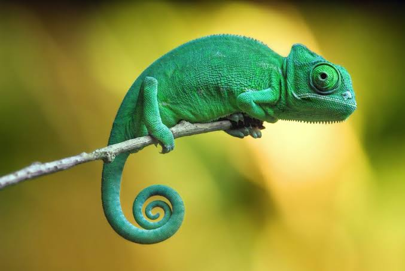

Camaleón
Camaleón (Chamaleonidae)

Hábitat:Viven en regiones tropicales y subtropicales.
Estilo de vida:son reptiles insectivoros.
Características:
- Se alimentan de grillos, saltamontes entre otros insectos.
- Los camaleones pueden cambiar de color ya sae por estado de animo, para camuflarse y llamar la atención a las hembras.
- Tiene ojos grandes que pueden mover de una forma independiente.
- La lengua del camaleón es una de sus características mas importante siendo pegajosa, y larga para atrapar a su presa.
- Los camaleones tienen una cola prensil, mas corta que su cabeza y cuerpo.
Volver a la pagina principal
pagina principal